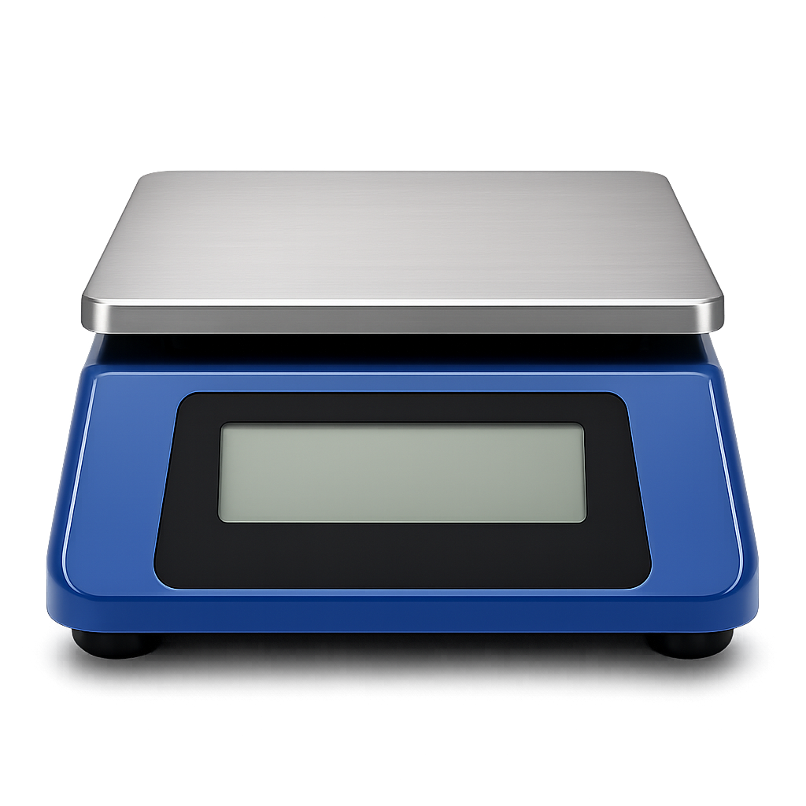
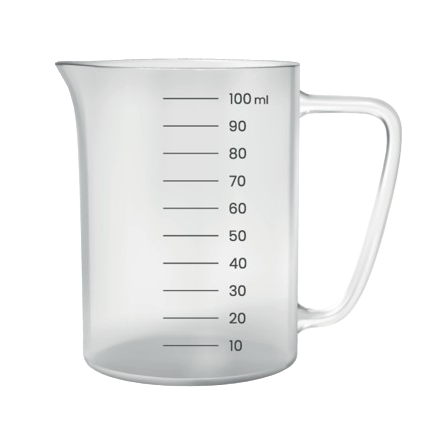
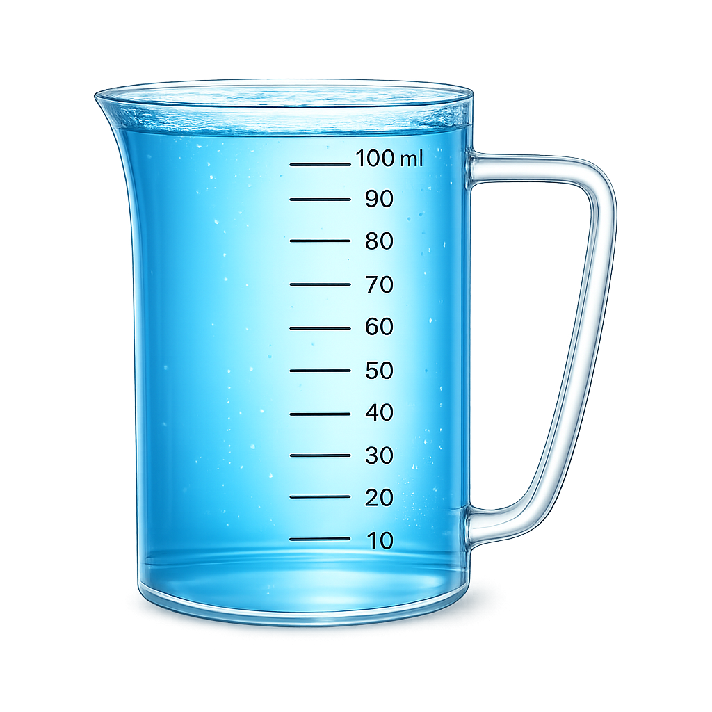
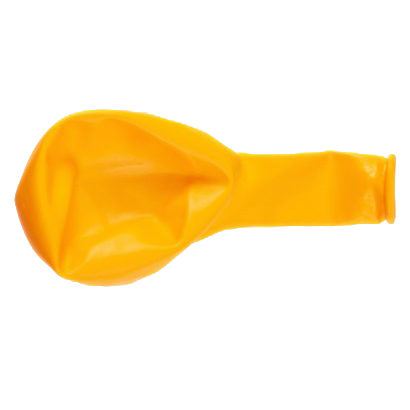
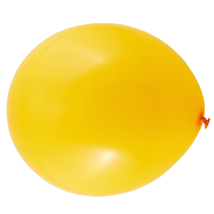
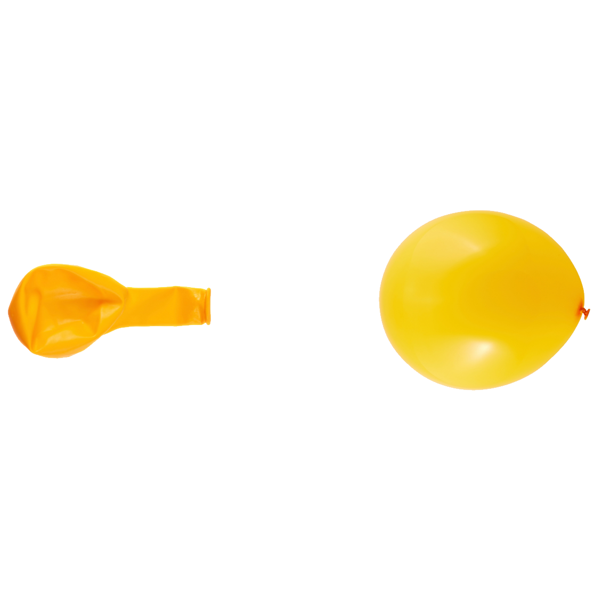

זמן ל־3 שאלות מתקדמות
ועוד הפתעות מעניינות...
(זה אומר שעלינו רמה)
חישוב מסה עקיפה — תרגול לקראת שאלה 1
נחזור אל מעבדת השקילה והפעם נשקול בה נוזל.


חישוב מסה עקיפה
לפניכם המדידות שהתקבלו במהלך השקילה:
מהי המסה האמיתית של הנוזל לבדו?

מסה של אוויר — תרגול לקראת שאלה 2
נחזור אל המאזניים והפעם נשקול בלון ריק.
א. שקלו את הבלון 3 פעמים כדי שהמדידה תהיה מהימנה.
לאחר כל מדידה, לחצו על כפתור "איפוס".
| מס' מדידה | תוצאה (גר') |
|---|---|
| 1 | |
| 2 | |
| 3 |

מסה של אוויר — תרגול לקראת שאלה 2
ג. ניפחנו עבורכם את הבלון.
שקלו גם את הבלון המנופח (3 פעמים כדי שהמדידה תהיה מהימנה).
לאחר כל מדידה, לחצו על כפתור "איפוס".
| מס' מדידה | תוצאה (גר') |
|---|---|
| 1 | |
| 2 | |
| 3 |


ממוצע מדידות: 3.2 ממוצע מדידות: 3.6מסה של אוויר
איזו מסקנה נתמכת בצורה הטובה ביותר על ידי הנתונים?
איך נכון למדוד?
תמר לומדת הנדסת כימיה, ועובדת כעוזרת מחקר במעבדה באוניברסיטה. הדוקטור עימו היא עובדת ביקש ממנה להוסיף 32 גרם מים לאבקת תרופה ניסיונית. היא מדדה פעם אחת וקיבלה בדיוק 32.0 גרם. היא חייכה בסיפוק ואמרה: "יש לי את זה!"
א. האם תמר סיימה את המדידה?
איך נכון למדוד?
ב. עזרו לתמר לבנות את פרוטוקול המדידה הנכון.
גררו וסדרו לפי הסדר רק את השלבים המתאימים.
רגע לפני שנמשיך,